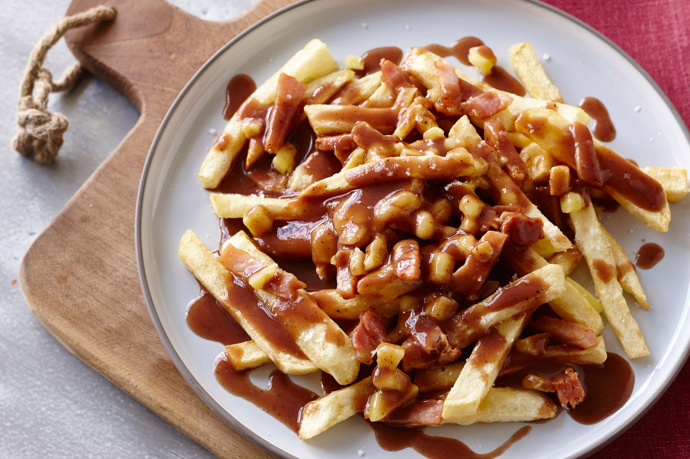

POUTINE
Western Dish (Canada)

Takes 40 minutes
Makes 4 servings
MAIN DISH
Ingredients
- 6 to 8 large Yukon gold potatoes, peeled
- 1 tablespoon vegetable oil, plus more for frying
- 1 shallot, minced
- 1 small clove garlic, minced
- 2 cups chicken stock
- 2 cups beef stock
- 2 tablespoons ketchup
- 1 tablespoon apple cider vinegar
- 1 tablespoon whole green peppercorns
- 1/2 teaspoon Worcestershire sauce
- 2 tablespoons unsalted butter
- 2 tablespoons all-purpose flour
- Kosher salt and freshly ground pepper
- 2 cups cheddar cheese curds
Instruction
- 1. Slice the potatoes lengthwise, about 1/4 inch thick. Stack the slices and cut lengthwise into 1/4-inch-thick sticks (or cut the potatoes into fries using a french fry cutter). Place in a large bowl filled with cold water and let sit at least 1 hour, or up to 24 hours for extra-crispy fries. Drain well and pat dry or spin dry in a salad spinner.
- 2. Make the gravy: Heat 1 tablespoon vegetable oil in a saucepan over medium heat. Add the shallot and garlic and saute until translucent, about 3 minutes. Add the chicken and beef stock, ketchup, vinegar, peppercorns and Worcestershire sauce and bring to a boil.
- 3. Meanwhile, in a separate saucepan, melt the butter over medium-high heat. Add the flour and make a roux, stirring until slightly browned, 2 to 3 minutes. Whisk the stock mixture into the roux and simmer until reduced by half, about 20 minutes. Season the gravy with salt and pepper and keep warm.
- 4. Line a baking sheet with a double layer of paper towels. Heat 2 to 3 inches vegetable oil in a heavy-bottomed pot over medium-high heat until a deep-fry thermometer registers 350 degrees F (or use a deep fryer). Fry the potatoes in small batches until whitish yellow, about 8 minutes. Remove with a strainer and drain on the paper towels. Bring the oil temperature to 375 degrees F over high heat. Fry the potatoes in batches again until golden brown, 6 to 8 minutes. Drain on fresh paper towels. Salt and pepper the fries while hot. Strain the gravy.
- 5. Put the fries in shallow dishes; top with the cheese curds and gravy.
SOURCE : www.foodnetwork.com
Add to Cart
want to try this recipe? order ingredients now!